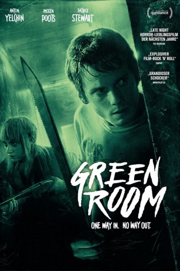

#4456 Green Room
 gesehen am 05.10.2016
gesehen am 05.10.2016
 
 IMDB-Wertung: 7.1 / 10
IMDB-Wertung: 7.1 / 10  Metascore: 0
Metascore: 0 
Ein absolutes Worst-Case-Szenario: Mit dem letzten Tropfen Benzin und völlig abgebrannt, schafft es die Punkband „Ain't Rights“ gerade noch zu ihrem Gig in einer entlegenen Kneipe im amerikanischen Nirgendwo. Das Publikum besteht ausschließlich aus Nazi-Skinheads und der Plan, sofort nach dem Auftritt abzuhauen, scheitert, als sie unfreiwillig Zeuge eines brutalen Mordes werden. Der gnadenlose Anführer der Nazi-Gang, Darcy Banker (Patrick Stewart), befiehlt seiner Kampftruppe, alle Zeugen des Verbrechens zu eliminieren. Die Band verbarrikadiert sich gemeinsam mit der Skin-Braut Amber (Imogen Poots) im Backstageraum. Es folgt ein erbarmungsloser Showdown Skins vs. Punks. Als der Bodycount steigt, müssen sich die Überlebenden etwas einfallen lassen, um dem grausamen Katz-und-Maus-Spiel ein Ende zu bereiten...
Jahr: 2015
Dauer: 95 Minuten
FSK: 18
Land: USA Studio: A24Tonspuren: DD5.1 - ,
Untertitel: Deutsch,
Auflösung: 1080p (1920x800) Größe: 8089 MB
Genre: Thriller, Horror, Krimi
Regisseur: Jeremy Saulnier
Drehbuch: Jean Bernard-Luc
Soundtrack:
Darsteller:
 Anton Yelchin als Pat
Anton Yelchin als Pat Joe Cole als Reece
Joe Cole als Reece Alia Shawkat als Sam
Alia Shawkat als Sam Callum Turner als Tiger
Callum Turner als Tiger- David W. Thompson als Tad
 Mark Webber als Daniel
Mark Webber als Daniel Macon Blair als Gabe
Macon Blair als Gabe Eric Edelstein als Big Justin
Eric Edelstein als Big Justin- Michael Draper als Stagehand
- Brent Werzner als Werm
- Lj Klink als Guitarist
- Taylor Tunes als Emily
 Imogen Poots als Amber
Imogen Poots als Amber Kai Lennox als Clark
Kai Lennox als Clark- October Moore als Cop #1
- Joseph Bertót als Cop #2
 Patrick Stewart als Darcy
Patrick Stewart als Darcy- Jacob Kasch als Bartender
- Samuel Summer als Jonathan
- Mason Knight als Kyle
- Colton Ruscheinsky als Alan
- Cody Burns als Punk Rocker , uncredited
- Audrey Walker als Hockey Mom , uncredited
- Andy Copeland als Stage Manager
- Kasey Brown als Drummer
- Jake Love als Twin #1
- Kyle Love als Twin #2
- Jace Daniel als Metalhead #1 , uncredited
- Milo Hayden als Hockey Kid , uncredited
- Eric Sahlstrom als Bar Patron , uncredited
- Jordan Yaroslavsky als Redneck Attendee at Punk Rock Venue , uncredited
Datei: X:\FSK18-2015\Green Room (2015, FSK18, 1920x800).mkv seit 21.09.2016
Festplatte: FSK18
 Es gibt insgesamt 23 Filme in der Gruppe 'FSK18-2015'
Es gibt insgesamt 23 Filme in der Gruppe 'FSK18-2015'